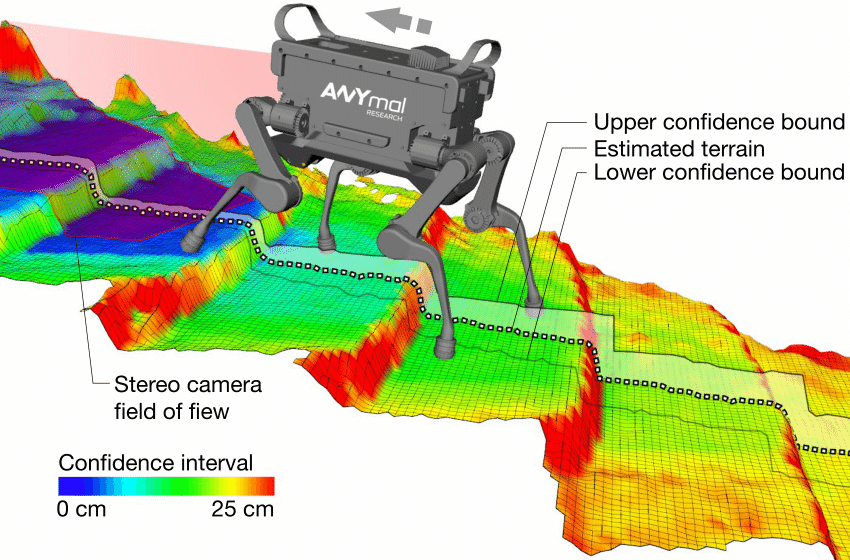
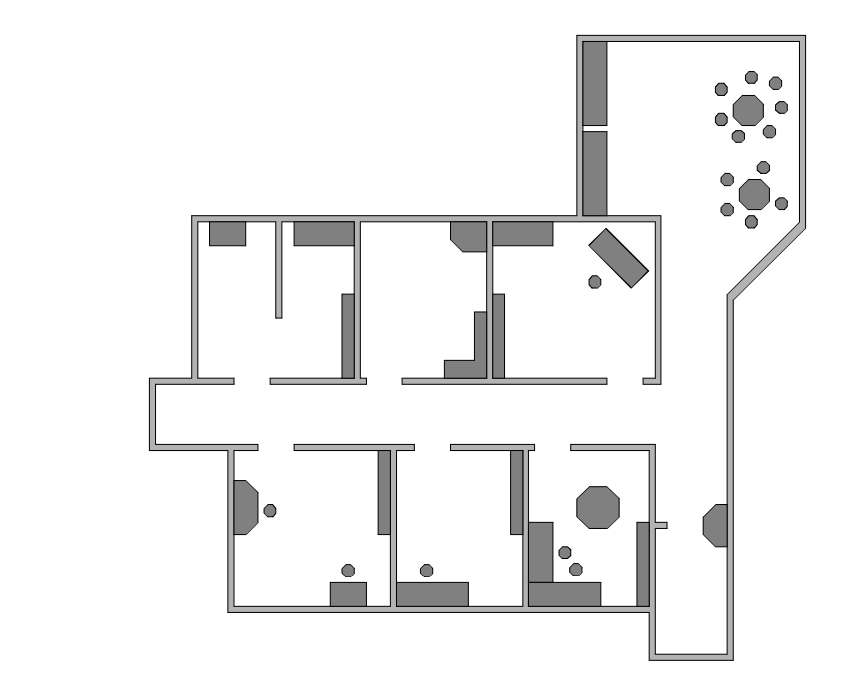
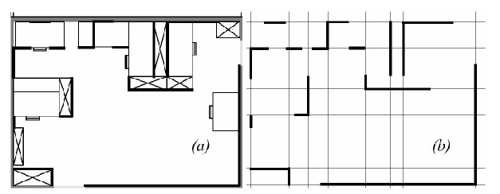
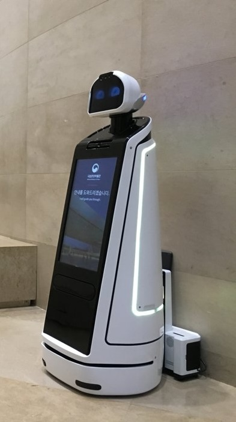

The problem of representing the environment in which an AMRAutonomous Mobile RoboticsSelf-navigating machines moving materials and goods independently without fixed tracks or wires. They use smart software, cameras, and sensors to map spaces and safely steer around people or obstacles in real time. moves is a dual of the problem of representing the robot’s possible position or positions. Decisions made regarding the environmental representation can have impact on the choices available for robot position representation.
Often the fidelity of the position representation is bounded by the fidelity of the map.
There are three (3) fundamental relationships which must be understood when choosing a particular map representation:
- 1.
- The precision of the map must appropriately match the precision with which the robot needs to achieve its goals.
- 2.
- The precision of the map and the type of features represented must match the precision and data types returned by the robot’s sensors.
- 3.
- The complexity of the map representation has direct impact on the computational complexity of reasoning about mapping, localisation and navigation.
Using the aforementioned criteria, we identify and discuss critical design choices in creating a map representation. Each such choice has great impact on the relationships, and on the resulting robot localisation architecture. As we will see, the choice of possible map representations is broad, if not expansive. Selecting an appropriate representation requires understanding all of the trade-offs inherent in that choice as well as understanding the specific context in which a particular AMRAutonomous Mobile RoboticsSelf-navigating machines moving materials and goods independently without fixed tracks or wires. They use smart software, cameras, and sensors to map spaces and safely steer around people or obstacles in real time. implementation must perform localisation.

A continuous-valued map is one method for exact decomposition of the environment. The position of
environmental features can be mapped precisely in continuous space.
AMRAutonomous Mobile RoboticsSelf-navigating machines moving materials and goods independently without fixed tracks or wires. They use smart software, cameras, and sensors to map spaces and safely steer around people or obstacles in real time. implementations to date use continuous maps only in two (2) dimensional representations, as increasing the number of dimensions can result in high computational load on the AMRAutonomous Mobile RoboticsSelf-navigating machines moving materials and goods independently without fixed tracks or wires. They use smart software, cameras, and sensors to map spaces and safely steer around people or obstacles in real time. navigation computer.
A common approach is to combine the exactness of a continuous representation with the compactness of the closed world assumption. This means that one assumes the representation will specify all environmental objects in the map, and that any area in the map which is devoid of objects has no objects in the corresponding portion of the environment. Therefore, the total storage needed in the map is proportional to the density of objects in the environment, and a sparse environment can be represented by a low-memory map.
One example of such a representation, shown in Fig. 4.10, is a 2D representation in which polygons represent all obstacles in a continuos-valued coordinate space. This is similar to the method used by Latombe [5, 113] and others to represent environments for AMRAutonomous Mobile RoboticsSelf-navigating machines moving materials and goods independently without fixed tracks or wires. They use smart software, cameras, and sensors to map spaces and safely steer around people or obstacles in real time. path planning techniques. In the case of [5, 113], most of the experiments are in fact simulations run exclusively within the computer’s memory. Therefore, no real effort would have been expended to attempt to use sets of polygons to describe a real-world environment, such as a park or office building.

In other work in which real environments must be captured by the maps, there seems to be a trend towards selectivity and abstraction. The human map-maker tends to capture on the map, for localisation purposes, only objects that can be detected by the robot’s sensors and, furthermore, only a subset of the features of real-world objects.
It should be immediately apparent that geometric maps can capably represent the physical locations of objects without referring to their texture, colour, elasticity, or any other such secondary features that do not related directly to position and space.
In addition to this level of abstraction, an AMRAutonomous Mobile RoboticsSelf-navigating machines moving materials and goods independently without fixed tracks or wires. They use smart software, cameras, and sensors to map spaces and safely steer around people or obstacles in real time. map can further reduce memory usage by capturing only aspects of object geometry which are immediately relevant to localisation. For example all objects may be approximated using very simple convex polygons, [114] A convex polygon is any shape that has all interior angles that measure less than 180 degrees sacrificing map felicity for the sake of computational speed.
One excellent example involves line extraction. Many indoor AMRAutonomous Mobile RoboticsSelf-navigating machines moving materials and goods independently without fixed tracks or wires. They use smart software, cameras, and sensors to map spaces and safely steer around people or obstacles in real time. rely upon laser range-finding devices to recover distance readings to nearby objects. Such robots can automatically extract best-fit lines from the dense range data provided by thousands of points of laser strikes. Given such a line extraction sensor, an appropriate continuous mapping approach is to populate the map with a set of infinite lines. The continuous nature of the map guarantees that lines can be positioned at arbitrary positions in the plane and at arbitrary angles. The abstraction of real environmental objects such as walls and intersections captures only the information in the map representation that matches the type of information recovered by the AMRAutonomous Mobile RoboticsSelf-navigating machines moving materials and goods independently without fixed tracks or wires. They use smart software, cameras, and sensors to map spaces and safely steer around people or obstacles in real time.’s rangefinding sensor.

Fig. 4.11 shows a map of an indoor environment at EPFL using a continuous line representation. Note that the only environmental features captured by the map are straight lines, such as those found at corners and along walls. This represents not only a sampling of the real world of richer features, but also a simplification, for an actual wall may have texture and relief that is not captured by the mapped line. The impact of continuos map representations on position representation is primarily positive. In the case of single hypothesis position representation, that position may be specified as any continuous-valued point in the coordinate space, and therefore extremely high accuracy is possible. In the case of multiple hypothesis position representation, the continuous map enables two types of multiple position representation. In one case, the possible robot position may be depicted as a geometric shape in the hyperplane, such that the robot is known to be within the bounds of that shape. This is shown in Figure 5.30, in which the position of the robot is depicted by an oval bounding area. Yet, the continuous representation does not disallow representation of position in the form of a discrete set of possible positions. For instance, in [111] the robot position belief state is captured by sampling nine continuous-valued positions from within a region near the robot’s best known position. This algorithm captures, within a continuous space, a discrete sampling of possible robot positions. In summary, the key advantage of a continuous map representation is the potential for high accuracy and expressiveness with respect to the environmental configuration as well as the robot position within that environment. The danger of a continuous representation is that the map may be computationally costly. But this danger can be tempered by employing abstraction and capturing only the most relevant environmental features. Together with the use of the closed world assumption, these techniques can enable a continuous-valued map to be no more costly, and sometimes even less costly, than a standard discrete representation.
In previous section, we discussed one method of simplification, in which the continuous map representation contains a set of infinite lines which approximate real-world environmental lines based on a two-dimensional slice of the world.
Basically this transformation from the real world to the map representation is a filter that removes all non-straight data and furthermore extends line segment data into infinite lines that require fewer parameters.
A more dramatic form of simplification is abstraction:
In this section, we explore decomposition as applied in its more extreme forms to the question of map representation. Why would one radically decompose the real environment during the design of a map representation? The immediate disadvantage of decomposition and abstraction is the loss of fidelity between the map and the real world. Both qualitatively, in terms of overall structure, and quantitatively, in terms of geometric precision, a highly abstract map does not compare favourably to a high-fidelity map.
Despite this disadvantage, decomposition and abstraction may be useful if the abstraction can be planned carefully so as to capture the relevant, useful features of the world while discarding all other features. The advantage of this approach is that the map representation can potentially be minimised. Furthermore, if the decomposition is hierarchical, such as in a pyramid of recursive abstraction, then reasoning and planning with respect to the map rep- resentation may be computationally far superior to planning in a fully detailed world model.
A standard, lossless form of opportunistic decomposition is termed exact cell decomposition. This method, introduced by [5], achieves decomposition by selecting boundaries between discrete cells based on geometric criticality.
Figure 5.14 depicts an exact decomposition of a planar workspace populated by polygonal obstacles. The map representation tessellates the space into areas of free space. The representation can be extremely compact because each such area is actually stored as a single node, shown in the graph at the bottom of Figure 5.14.
The underlying assumption behind this decomposition is that the particular position of a robot within each area of free space does not matter. What matters is the robot’s ability to traverse from each area of free space to the adjacent areas. Therefore, as with other representations we will see, the resulting graph captures the adjacency of map locales. If indeed the assumptions are valid and the robot does not care about its precise position within a single area, then this can be an effective representation that nonetheless captures the connectivity of the environment.
Such an exact decomposition is not always appropriate. Exact decomposition is a function of the particular environment obstacles and free space. If this information is expensive to collect or even unknown, then such an approach is not feasible.
An alternative is fixed decomposition, in which the world is tessellated, transforming the continuos real environment into a discrete approximation for the map. Such a transforma- tion is demonstrated in Figure 5.15, which depicts what happens to obstacle-filled and free areas during this transformation. The key disadvantage of this approach stems from its in- exact nature. It is possible for narrow passageways to be lost during such a transformation, as shown in Figure 5.15. Formally this means that fixed decomposition is sound but not complete. Yet another approach is adaptive cell decomposition as presented in Figure 5.16.
The concept of fixed decomposition is extremely popular in AMRAutonomous Mobile RoboticsSelf-navigating machines moving materials and goods independently without fixed tracks or wires. They use smart software, cameras, and sensors to map spaces and safely steer around people or obstacles in real time.ics; it is perhaps the single most common map representation technique currently utilised. One very popular version of fixed decomposition is known as the occupancy grid representation [91]. In an occupancy grid, the environment is represented by a discrete grid, where each cell is either filled (part of an obstacle) or empty (part of free space). This method is of particular value when a robot is equipped with range-based sensors because the range values of each sensor, combined with the absolute position of the robot, can be used directly to update the filled/ empty value of each cell. In the occupancy grid, each cell may have a counter, whereby the value 0 indicates that the cell has not been "hit" by any ranging measurements and, therefore, it is likely free space. As the number of ranging strikes increases, the cell’s value is incremented and, above a cer- tain threshold, the cell is deemed to be an obstacle. By discounting the values of cells over time, both hysteresis and the possibility of transient obstacles can be represented using this occupancy grid approach. Figure 5.17 depicts an occupancy grid representation in which the darkness of each cell is proportional to the value of its counter. One commercial robot that uses a standard occupancy grid for mapping and navigation is the Cye robot [112].
There remain two main disadvantages of the occupancy grid approach. First, the size of the map in robot memory grows with the size of the environment and, if a small cell size is used, this size can quickly become untenable. This occupancy grid approach is not compatible with the closed world assumption, which enabled continuous representations to have poten- tially very small memory requirements in large, sparse environments. In contrast, the occu- pancy grid must have memory set aside for every cell in the matrix. Furthermore, any fixed decomposition method such as this imposes a geometric grid on the world a priori, regard- less of the environmental details. This can be inappropriate in cases where geometry is not the most salient feature of the environment. For these reasons, an alternative, called topological decomposition, has been the subject of some exploration in AMRAutonomous Mobile RoboticsSelf-navigating machines moving materials and goods independently without fixed tracks or wires. They use smart software, cameras, and sensors to map spaces and safely steer around people or obstacles in real time.ics. Topological approaches avoid direct measurement of geometric environmental qualities, instead concentrating on characteristics of the environ- ment that are most relevant to the robot for localisation. Formally, a topological representation is a graph that specifies two things: nodes and the connectivity between those nodes. Insofar as a topological representation is intended for the use of a AMRAutonomous Mobile RoboticsSelf-navigating machines moving materials and goods independently without fixed tracks or wires. They use smart software, cameras, and sensors to map spaces and safely steer around people or obstacles in real time., nodes are used to denote areas in the world and arcs are used to denote adjacency of pairs of nodes. When an arc connects two nodes, then the robot can traverse from one node to the other without requiring traversal of any other intermediary node. Adjacency is clearly at the heart of the topological approach, just as adjacency in a cell de- composition representation maps to geometric adjacency in the real world. However, the topological approach diverges in that the nodes are not of fixed size nor even specifications of free space. Instead, nodes document an area based on any sensor discriminant such that the robot can recognise entry and exit of the node. Figure 5.18 depicts a topological representation of a set of hallways and offices in an indoor environment. In this case, the robot is assumed to have an intersection detector, perhaps us- ing sonar and vision to find intersections between halls and between halls and rooms. Note that nodes capture geometric space and arcs in this representation simply represent connec- tivity. Another example of topological representation is the work of Dudek [49], in which the goal is to create a AMRAutonomous Mobile RoboticsSelf-navigating machines moving materials and goods independently without fixed tracks or wires. They use smart software, cameras, and sensors to map spaces and safely steer around people or obstacles in real time. that can capture the most interesting aspects of an area for human consumption. The nodes in Dudek’s representation are visually striking locales rather than route intersections. In order to navigate using a topological map robustly, a robot must satisfy two constraints. First, it must have a means for detecting its current position in terms of the nodes of the to- pological graph. Second, it must have a means for traveling between nodes using robot mo- tion. The node sizes and particular dimensions must be optimised to match the sensory discrimination of the AMRAutonomous Mobile RoboticsSelf-navigating machines moving materials and goods independently without fixed tracks or wires. They use smart software, cameras, and sensors to map spaces and safely steer around people or obstacles in real time. hardware. This ability to "tune" the representation to the robot’s particular sensors can be an important advantage of the topological approach. How- ever, as the map representation drifts further away from true geometry, the expressiveness of the representation for accurately and precisely describing a robot position is lost. Therein lies the compromise between the discrete cell-based map representations and the topological representations. Interestingly, the continuous map representation has the potential to be both compact like a topological representation and precise as with all direct geometric rep- resentations. Yet, a chief motivation of the topological approach is that the environment may contain im- portant non-geometric features - features that have no ranging relevance but are useful for localisation. In Chapter 4 we described such whole-image vision-based features. In contrast to these whole-image feature extractors, often spatially localised landmarks are artificially placed in an environment to impose a particular visual-topological connectivity upon the environment. In effect, the artificial landmark can impose artificial structure. Ex- amples of working systems operating with this landmark-based strategy have also demon- strated success. Latombe’s landmark-based navigation research 89 has been implemented on real-world indoor AMRAutonomous Mobile RoboticsSelf-navigating machines moving materials and goods independently without fixed tracks or wires. They use smart software, cameras, and sensors to map spaces and safely steer around people or obstacles in real time.s that employ paper landmarks attached to the ceiling as the locally observable features. Chips the museum robot is another robot that uses man- made landmarks to obviate the localisation problem. In this case, a bright pink square serves as a landmark with dimensions and color signature that would be hard to accidentally repro- duce in a museum environment [88]. One such museum landmark is shown in Figure (5.19). In summary, range is clearly not the only measurable and useful environmental value for a AMRAutonomous Mobile RoboticsSelf-navigating machines moving materials and goods independently without fixed tracks or wires. They use smart software, cameras, and sensors to map spaces and safely steer around people or obstacles in real time.. This is particularly true due to the advent of color vision as well as laser rangefinding, which provides reflectance information in addition to range information. Choosing a map representation for a particular AMRAutonomous Mobile RoboticsSelf-navigating machines moving materials and goods independently without fixed tracks or wires. They use smart software, cameras, and sensors to map spaces and safely steer around people or obstacles in real time. requires first understanding the sensors available on the AMRAutonomous Mobile RoboticsSelf-navigating machines moving materials and goods independently without fixed tracks or wires. They use smart software, cameras, and sensors to map spaces and safely steer around people or obstacles in real time. and second understanding the AMRAutonomous Mobile RoboticsSelf-navigating machines moving materials and goods independently without fixed tracks or wires. They use smart software, cameras, and sensors to map spaces and safely steer around people or obstacles in real time.’s function- al requirements (e.g. required goal precision and accuracy).
Previous section describe major design decisions with regards to map representation choices. There are, however, fundamental real-world features which AMRAutonomous Mobile RoboticsSelf-navigating machines moving materials and goods independently without fixed tracks or wires. They use smart software, cameras, and sensors to map spaces and safely steer around people or obstacles in real time. map representations do not work as well. These continue to be the subject of open research, and several such challenges are described below. The real world is dynamic. As AMRAutonomous Mobile RoboticsSelf-navigating machines moving materials and goods independently without fixed tracks or wires. They use smart software, cameras, and sensors to map spaces and safely steer around people or obstacles in real time.s come to work and move in the same spaces as humans, they will encounter:
-
moving people,
-
cars,
-
strollers, and
-
transient obstacles.
This is particularly true when one considers a home setting with which domestic robots will someday need to contend.
The map representations described previously do not, in general, have explicit methods for identifying and distinguishing between permanent obstacles (e.g. walls, doorways, etc.) and transient obstacles (e.g., humans, shipping packages, etc.). The current state of the art in terms of AMRAutonomous Mobile RoboticsSelf-navigating machines moving materials and goods independently without fixed tracks or wires. They use smart software, cameras, and sensors to map spaces and safely steer around people or obstacles in real time. sensors is partly to blame for this shortcoming. Although vision research is rapidly advancing, robust sensors that discriminate between moving animals and static structures from a moving reference frame are not yet available. Furthermore, estimating the motion vector of transient objects remains a research problem. Usually, the assumption behind the above map representations is that all objects on the map are effectively static. Partial success can be achieved by discounting mapped objects over time. For example, occupancy grid techniques can be more robust to dynamic settings by introducing temporal discounting, effectively treating transient obstacles as noise. The more challenging process of map creation is particularly fragile to environment dynamics; most mapping techniques generally require that the environment be free of moving objects during the mapping process. One exception to this limitation involves topological representations. Because precise geometry is not important, transient objects have little effect on the map- ping or localisation process, subject to the critical constraint that the transient objects must not change the topological connectivity of the environment. Still, neither the occupancy grid representation nor a topological approach is actively recognizing and representing transient objects as distinct from both sensor error and permanent map features.
As vision sensing provides more robust and more informative content regarding the transience and
motion details of objects in the world, researchers will in time propose representations that make use of
that information. A classic example involves occlusion by human crowds. Museum tour guide robots
[115] ¶ 
A second open challenge in AMRAutonomous Mobile RoboticsSelf-navigating machines moving materials and goods independently without fixed tracks or wires. They use smart software, cameras, and sensors to map spaces and safely steer around people or obstacles in real time. localisation involves the traversal of open spaces. Existing localisation techniques generally depend on local measures such as range, thereby demanding environments that are somewhat densely filled with objects that the sensors can detect and measure. Wide open spaces such as parking lots, fields of grass and indoor open-spaces such as those found in convention centres or expos pose a difficulty for such systems due to their relative sparseness. Indeed, when populated with humans, the challenge is exacerbated because any mapped objects are almost certain to be occluded from view by the people. Once again, more recent technologies provide some hope for overcoming these limitations. Both vision and state-of-the-art laser range-finding devices offer outdoor performance with ranges of up to a hundred meters and more. Of course, GPSGlobal Positioning SystemGlobal Positioning System performs even better. Such long-range sensing may be required for robots to localise using distant features. This trend teases out a hidden assumption underlying most topological map representations. Usually, topological representations make assumptions regarding spatial locality:
The process of map creation therefore involves making nodes which are, in their own self-contained way, recognizable by virtue of the objects contained within the node. Therefore, in an indoor environment, each room can be a separate node. This is a reasonable assumption as each room will have a layout and a set of belongings that are unique to that room.
However, consider the outdoor world of a wide-open park.
The answer is unclear as objects which are far away from the current node, or position, can give information for the localisation process. For example, the hump of a hill at the horizon, the position of a river in the valley and the trajectory of the Sun all are non-local features that have great bearing on one’s ability to infer current position.
The spatial locality assumption is violated and, instead, replaced by a visibility criterion:
Once again, as sensors and outdoor locomotion mechanisms improve, there will be greater urgency to solve problems associated with localisation in wide-open settings, with and without GPS-type global localisation sensors. [116] Of course with the use of a GNSSGlobal Navigation Satellite SystemGlobal Navigation Satellite System, the localisation problem may completely be solved, however in cost saving measures one would wish to avoid the use of them as they can be expensive.
We end this section with one final open challenge that represents one of the fundamental ac- ademic research questions of robotics: sensor fusion.
A variety of measurement types are possible using off-the-shelf robot sensors, including heat, range, acoustic and light-based reflectivity, color, texture, friction, etc. Sensor fusion is a research topic closely related to map representation. Just as a map must embody an environment in sufficient detail for a robot to perform localisation and reasoning, sensor fusion demands a representation of the world that is sufficiently general and expressive that a variety of sensor types can have their data correlated appropriately, strengthening the resulting percepts well beyond that of any individual sensor’s readings.
An implementation example implementation of sensor fusion to date is that of neural network classifier. Using this technique, any number and any type of sensor values may be jointly combined in a network that will use whatever means necessary to optimise its classification accuracy. For the AMRAutonomous Mobile RoboticsSelf-navigating machines moving materials and goods independently without fixed tracks or wires. They use smart software, cameras, and sensors to map spaces and safely steer around people or obstacles in real time. that must use a human-readable internal map representation, no equally general sensor fusion scheme has yet been born. It is reasonable to expect that, when the sensor fusion problem is solved, integration of a large number of disparate sensor types may easily result in sufficient discriminatory power for robots to achieve real-world navigation, even in wide-open and dynamic circumstances such as a public square filled with people.
-
¶
- GNSSGlobal Navigation Satellite System
Global Navigation Satellite System
-
¶
- GPSGlobal Positioning System
Global Positioning System
-
¶
- AMRAutonomous Mobile Robotics
Self-navigating machines moving materials and goods independently without fixed tracks or wires. They use smart software, cameras, and sensors to map spaces and safely steer around people or obstacles in real time.
- 1.
- Fankhauser, P., Bloesch, M. & Hutter, M. Probabilistic terrain mapping for mobile robots with uncertain localization. IEEE Robotics and Automation Letters 3, 3019–3026 (2018)
- 2.
- Agency., Y. N. Museum guide robot 2018
- [114].
- A convex polygon is any shape that has all interior angles that measure less than 180 degrees
- [116].
- Of course with the use of a GNSSGlobal Navigation Satellite SystemGlobal Navigation Satellite System, the localisation problem may completely be solved, however in cost saving measures one would wish to avoid the use of them as they can be expensive.